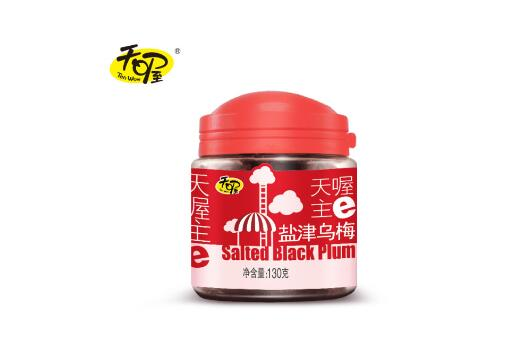
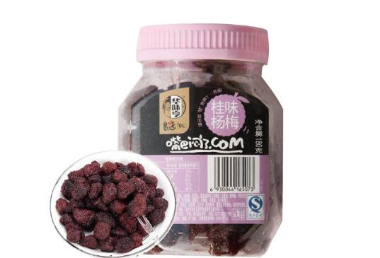

第一名：三只松鼠果干
销量领先的互联网食品品牌，以坚果、干果、茶叶、休闲零食等食品的研发、分装及销售的为主的产业链平台型企业。 三只松鼠积极探索利用“互联网+”推动中国农产品行业变革，有效地将信息化技术、动漫化品牌、数据化品质控制方式相结合， 采用全新的商业模式和运营手法，使农产品品质更稳定、物流周转速度更快、产品新鲜度更好、品牌更贴近年轻一代的消费者， 并且专注为消费者提供极致的用户体验。三只松鼠云品控中心通过全平台、全数据、全项检、全批次、全链路的方式， 将1200多名研发人员聚集在该平台上参与产品研发，并将生产者与消费者连接在一起，通过用户评价及检测数据对上游生产者进行实时品质倒逼改善。 在松鼠新的改革目标中显示，在过去5年的基础上，三只松鼠将努力向生态型企业转型，共享技术、设备等资源，对社会有效资源进行整合， 为主人、伙伴、员工创造更为可观的价值。
第二名：百草味果干
互联网坚果类食品销售领先品牌，以休闲食品加工/生产/贸易为主，集连锁/B2C经营模式为一体的新型企业。 公司自成立以来，一直以“做中国休闲零食第一品牌”为目标，以“快乐百草味健康好滋味“为口号， 先后成立了加盟连锁事业部、电子商务事业部，员工人数达到200多名。 建立了涵盖：坚果炒货、蜜饯话梅、糕点饼干、肉干肉脯、花茶等5大系列300多个单品的产品体系，基本形成休闲食品一站式购物的格局。 本着品质优先的理念，公司累计投入2000多万元建立了现代化的食品生产线，仓储面积达到1万平方米。
第三名：良品铺子果干
湖北省著名商标，高品质健康休闲零食领导品牌，中部地区知名度高，集休闲食品研发/加工/零售服务的品牌连锁运营企业。 自2006年成立以来，公司一直秉承“品质、快乐、家”的管理理念，为祖国人民提供高品质的休闲食品，现已成为中国中部地区最大的休闲食品连锁零售企业。 良品铺子从第一家门店起步，坚持研发高品质的产品，不断引进先进的经营管理思想，打造公司不可超越不可模仿的产品竞争力； 注重对员工的培训和内部提拔，鼓励员工和公司共同成长，建立了一支优秀年轻有活力的管理团队，现公司正以超乎人们想象的速度快速发展，成为人们关注的焦点。
第四名：天喔TENWOW果干
上海市著名商标，外商独资企业，专注食品饮品类快速消费品专业生产和营销的大型现代食品产业集团。 旗下拥有多个中华老字号、地方著名商标， 产品线主要包括蜜饯、炒货、休闲肉(鱼)制品、饮料、南北货、燕麦谷物、调料、营养黄酒、葡萄酒9大系列产品， 先后在上海、福建、湖北、四川设立了大型生产园区，覆盖了华东、华南、华中、西南地区。通过这一系列产业布局， 天喔食品集团迅速发展成了产销一体、链式经营的大型现代食品产业集团，并积极发展全国战略布局， 为集团进一步实现又快、又好发展奠定坚实基础。天喔食品集团的理念是"敬天爱人"， 天喔食品集团的全体员工将会持之以恒、竭尽全力地以健康、时尚、快乐的天喔食品来回报广大消费者， 回报社会，以我们的"自然心，分享爱"！
第五名：华味亨果干
创于1992年，十大蜜饯果脯品牌， 集休闲食品研发、生产、销售为一体的现代化企业， 主打蜜饯坚果/鱼制品/肉制品系列食品。 目前公司在全国一线城市均有分公司，产品遍及国内各大型卖场和连锁超市， 在“沃尔玛”、“家乐福”、“欧尚”、“世纪联华”、“物美”、“华润万家”、“乐购”等大型超市均有销售， “华味亨”牌蜜饯以绿色、无污染的青梅、桃等果品为原料。 秉承“优质、品新、味中有味、颗颗精选、包包达标、不选不投、不合格不出厂”的质量承诺， 保证出厂产品在“色、香、味、形”上都达到一定的标准，工艺精细独特，保持原果风味，在蜜饯行业中独树一帜，深受消费者青睐。
第六名：御食园果干
果脯蜜饯十大品牌，以特产食品和特色休闲食品为主， 专注于农副产品初加工和精深加工的现代化食品高新技术企业。 公司始终坚持"食以民为天"的品牌理念，依托怀柔山区得天独厚的生态环境优势， 成功开创了"公司+基地+农户+市场"的干鲜果品加工一体化经营之路， 自主研发、自主生产和销售北京特产食品、中华名小吃、特色休闲食品和绿色原生食品四大品类两百多种产品， 年销售额超过3亿元，堪称北京特色食品行业的一面旗帜。 公司的板栗系列、营养小甘薯系列已出口到美国、日本、韩国、加拿大、西欧等国，受到国际市场的一致欢迎。 御食园牌冰糖葫芦、北京果脯、茯苓夹饼、怀柔甘栗、驴打滚、小甘薯、京八件等20种产品被中华烹饪学会授予中华名小吃称号。
第七名：盐津铺子果干
以具地方特色的凉果蜜饯产品发轫，专注于中国传统特色小品类休闲食品科研/生产/加工/销售的综合型企业。 公司秉承“好零食，盐津造”的品牌理念，专业、专注于休闲食品行业， 以具有地方特色的凉果蜜饯产品发轫，推陈出新，建立起中国传统特色小品类休闲食品全品类产品体系， 主要包括休闲豆制品、凉果蜜饯、坚果炒货、休闲素食、休闲肉制品、糕点制品等“盐津铺子”系列产品。 经过多年的发展，公司在原料配方、生产工艺、技术设备、质量标准、产品质量、品牌信誉方面达到了行业领先水平。
第八名：来伊份果干

创立于1999年，坚果炒货十大品牌，上海市著名商标，美味坚果/天然果干/肉制品等系列食品供应商， 大型休闲食品连锁零售企业。来伊份精确把握市场消费需求，放眼全球精心开发国内外各类优质休闲食品， 经营着炒货、肉制品、蜜饯、水产品、糖果/果冻、膨化、果蔬、豆制品、糕点等九大类、近千种美食。 “三好一公道”是来伊份的经营理念，即品质好、味道好、服务好和价格公道。在互联网+时代，来伊份依托先进的信息系统， 前瞻性地建立“专卖店+电商+手机APP”三位一体的线上线下、全渠道销售模式，致力于带给消费者“一站式”的便捷购物新体验。 在专卖店业务稳步发展的情况下，目前，来伊份电商业务及手机APP业务发展迅猛。
第九名：溜溜果园果干
安徽省著名商标，特色果品加工行业知名品牌，青梅食品行业引领者， 集特色果品种植、加工、销售、科研于一体的现代化企业。 由溜溜果园集团为龙头主导建立的“中国梅特色产业联合体”， 以L2F为发展模式的农业新型联合体经济模式，被安徽省认定为首批省级农业产业化示范联合体。 集团拟以中国梅特色产业联合体带动特色农业三产融合发展，形成中国梅大健康产业集群， 并整合全球优质水果资源，坚持“产业+、大单品”的产业发展理念，坚定“产业化、品牌化、国际化”的产业发展战略， 推动特色产业多元化经济发展，振兴特色农业大健康产业，引领特色食品崛起，打造现代农业典范，树立产业标杆。
第十名：佳宝果干
蜜饯十大品牌，广东省著名商标，广东省名牌产品，以蜜饯、酱菜、水果浓缩汁等食品为主， 集包装、生物化妆品等多元经营为一体的高新技术企业。 多年的发展让公司产品远销国外， 其中佳宝蜜饯行销除西藏之外全国各省、市、自治区，更远销东南亚、日、韩和美、加等地， 并辐射到世界各地。如今，佳宝集团已成为我国的农副产品深加工企业的佼佼者， 更是运用科技创新做大做强传统产业的佼佼者， 我们秉承“科技进步与创新能力永远是市场竞争和核心竞争力”的主题经营理念，重视人才因素， 视产品质量为生命，以管理出效益，以创新求发展，实现传统产业的工业化、标准化、规模化和可持续发展。